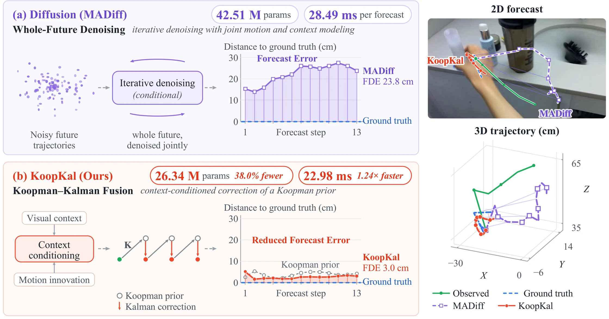
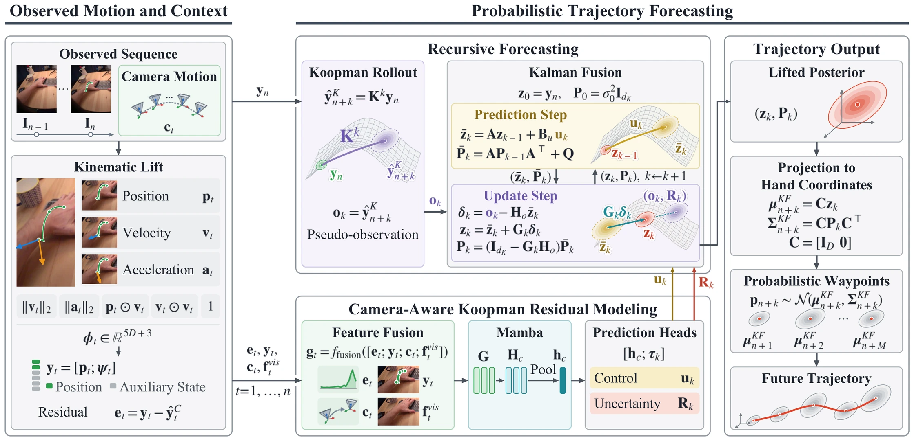
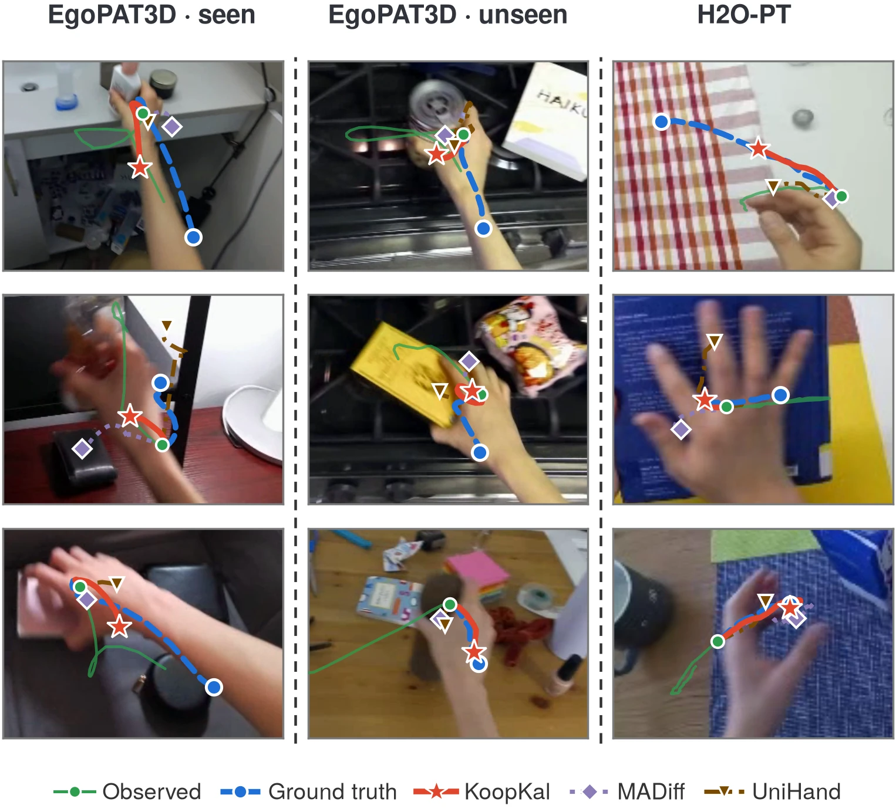
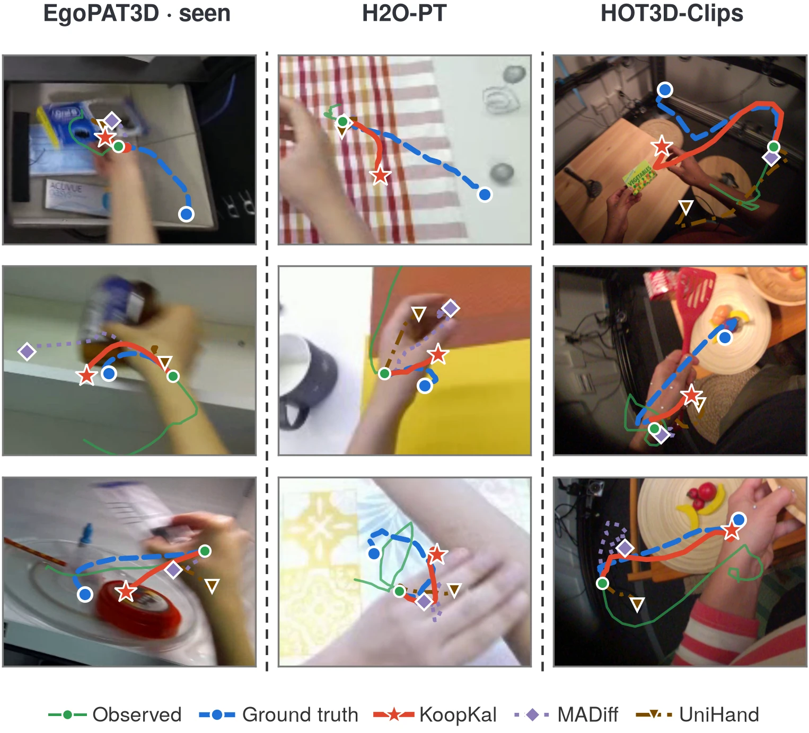
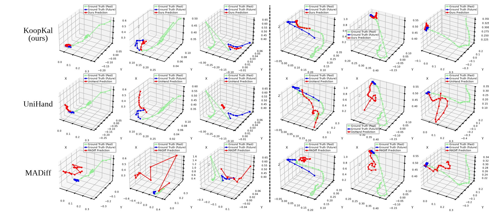
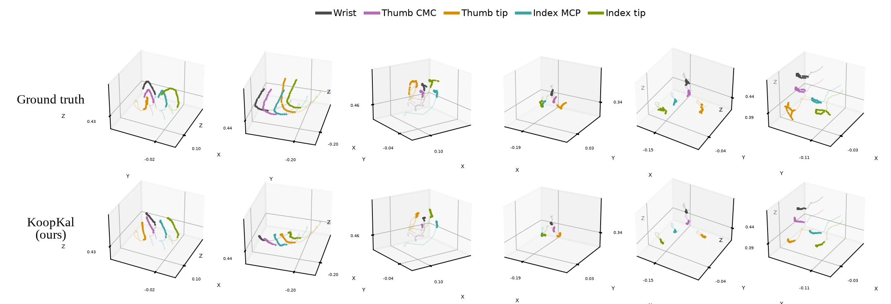

KoopKal: Koopman-Kalman Probabilistic Dynamics for Egocentric Hand Trajectory Forecasting
School of Control Science and Engineering, Shandong University

Abstract
Egocentric hand trajectory forecasting predicts future hand motion from past egocentric video and hand waypoints, which are influenced by hand dynamics, human–object interactions, and camera motion. Recent methods have achieved promising performance by modeling past hand motion and visual context through autoregressive forecasting or diffusion-based generation. However, these methods lack an explicit dynamical prior to constrain hand-state transitions, relying mainly on data-driven modeling or iterative denoising. Consequently, prediction deviations become increasingly difficult to track and correct over the forecasting horizon, potentially leading to trajectory drift. To address this issue, we propose Koopman–Kalman Probabilistic Dynamics for Egocentric Hand Trajectory Forecasting (KoopKal), a probabilistic state-space framework that models egocentric hand motion using structured Koopman dynamics and recursively predicts future trajectories and uncertainties through Kalman filtering. Specifically, KoopKal uses a shared Koopman operator to model hand-motion dynamics in a lifted state space, providing a structured dynamical prior for future trajectory forecasting. To account for camera motion and hand–object interactions, we introduce a camera-aware residual module that integrates historical Koopman innovations and camera-motion cues to capture context-dependent variations and generate step-wise controls for future latent-state evolution. Finally, we develop a Kalman filtering framework that propagates future latent states using generated controls and incorporates Koopman predictions for recursive state estimation and uncertainty quantification. Experiments on four public egocentric benchmarks show that KoopKal achieves state-of-the-art performance in 2-D, metric 3-D, and multi-joint forecasting, with 38.0% fewer parameters and 1.24× faster inference than the latest baseline.
Method
KoopKal formulates egocentric hand trajectory forecasting as Koopman-guided recursive state estimation. At each future step, camera-aware latent controls drive the state prediction, and future Koopman predictions serve as pseudo-observations for uncertainty-aware Kalman updates.

-
Position-preserving Koopman dynamics
KoopKal lifts each observed hand position, together with its velocity, acceleration, and nonlinear kinematic terms, into a position-preserving state, so hand waypoints are recovered directly without an additional trajectory decoder. A shared Koopman operator captures nominal hand-motion evolution through linear dynamics in this lifted space, providing a structured dynamical prior. Historical Koopman innovations are the discrepancies between observed lifted states and their one-step predictions.
-
Camera-aware Koopman residual modeling
A camera-aware residual modeling module integrates historical Koopman innovations, lifted hand states, camera-egomotion descriptors, and RGB visual features to capture variations arising from hand–object interactions and viewpoint changes. It generates horizon-dependent latent control inputs and input-dependent uncertainties of the Koopman pseudo-observations, using only observed frames.
-
Recursive Kalman filtering
Starting from the last observed lifted state, each future step runs a control-driven Prediction Step followed by a Koopman-guided Update Step, in which future Koopman predictions act as pseudo-observations. The Kalman gain balances the two estimates according to their uncertainties. The posterior states and covariances are projected to hand coordinates, yielding probabilistic waypoints and a predicted trajectory.
Results
We evaluate KoopKal on four egocentric benchmarks (EgoPAT3D-DT, H2O-PT, HOT3D-Clips, and CABH), covering 2-D, metric 3-D, and five-joint hand trajectory forecasting under seen- and unseen-environment protocols. For example, in 2-D on EgoPAT3D-DT, KoopKal reaches an ADE/FDE of 0.053/0.093 on seen scenes and 0.042/0.075 on unseen scenes, compared with 0.064/0.109 and 0.052/0.087 for Uni-Hand.
2-D forecasting in egocentric video
Each animation plays the observed clip and then draws the forecasts step by step on the reference frame, with MADiff and Uni-Hand for comparison. Samples come from EgoPAT3D-DT, including one unseen scene, and H2O-PT.


Metric 3-D forecasting
Hand-center trajectories in meters on EgoPAT3D-DT and HOT3D-Clips, plotted from a fixed viewpoint with equal axis scales. Each animation draws the observed trajectory, then the ground-truth future and the KoopKal forecast, using the paper's exported coordinates without interpolation.

